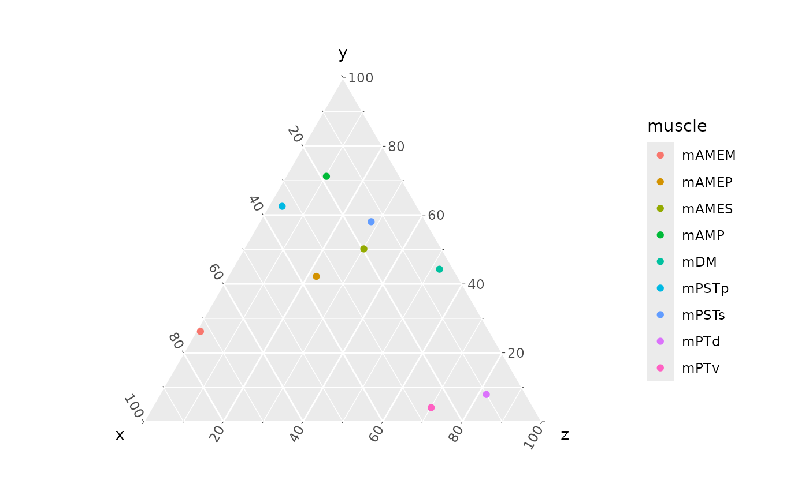
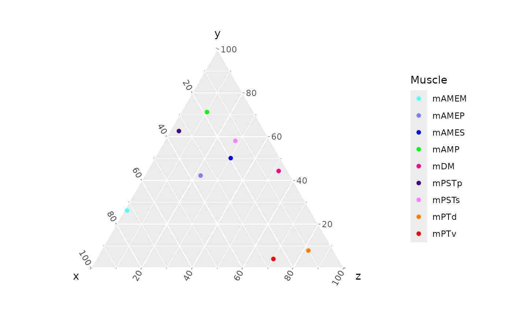

Make a ternary plot
ternary_plot.RmdTo create a ternary plot from origin and insertion data, first we need data. Attachment centroid data are available for the AL_008 specimen of Alligator mississippiensis (although similar data can be extracted directly from stl files; see the “Working with stl files” article).
library(MuscleTernary)
AL008 <- read_csv(system.file("extdata",
"AL_008_data.csv",
package = "MuscleTernary"),
show_col_types = FALSE) |>
dplyr::select(-side)
AL008
#> # A tibble: 18 × 8
#> muscle x_origin y_origin z_origin x_insertion y_insertion z_insertion force
#> <chr> <dbl> <dbl> <dbl> <dbl> <dbl> <dbl> <dbl>
#> 1 mAMES 87.6 41.6 -168. 109. 4.92 -133. 665.
#> 2 mAMES -83.8 45.1 -163. -108. 7.69 -141. 612.
#> 3 mAMEM 34.2 42.8 -140. 103. -1.59 -129. 272.
#> 4 mAMEM -30.2 43.4 -139. -103. 2.88 -144. 298.
#> 5 mAMEP 27.1 65.4 -130. 92.2 -9.95 -71.7 84.5
#> 6 mAMEP -19.7 69.6 -128. -90.2 -2.99 -79.1 83.2
#> 7 mAMP 64.2 35.9 -172. 110. -53.8 -140. 2720.
#> 8 mAMP -63.6 35.8 -173. -108. -51.9 -138. 2713.
#> 9 mPSTs 23.3 68.3 -118. 95.9 -78.9 -17.5 698.
#> 10 mPSTs -16.9 69.0 -116. -88.2 -78.5 -11.9 672.
#> 11 mPSTp 19.5 48.9 -119. 97.8 -59.6 -143. 10.8
#> 12 mPSTp -12.5 48.7 -117. -92.9 -58.1 -144. 13.3
#> 13 mPTd 38.8 21.3 -68.8 91.0 -28.5 -222. 3643.
#> 14 mPTd -34.9 20.6 -62.6 -91.5 -26.2 -221. 3819.
#> 15 mPTv 47.8 -50.5 -129. 112. -21.2 -246. 701.
#> 16 mPTv -40.9 -47.4 -129. -114. -22.1 -239. 694.
#> 17 mDM 76.4 56.2 -206. 86.7 9.90 -255. 674.
#> 18 mDM -75.5 58.0 -201. -90.7 13.1 -251. 729.We need to convert the x, y, and z origin and insertion columns into
relative ternary coordinates using the coords_to_ternary()
function. Here we also use the grouping option to return
the mean for each muscle, because the original data have both left and
right (two rows per muscle; note that the side column was
dropped above).
ternary_coords <- coords_to_ternary(coords = AL008, grouping = c("muscle"))
ternary_coords
#> # A tibble: 9 × 5
#> muscle force x y z
#> <chr> <dbl> <dbl> <dbl> <dbl>
#> 1 mAMEM 285. 72.6 26.2 1.13
#> 2 mAMEP 83.9 35.6 42.2 22.2
#> 3 mAMES 638. 19.7 50.2 30.2
#> 4 mAMP 2717. 18.5 71.3 10.2
#> 5 mDM 701. 3.60 44.3 52.1
#> 6 mPSTp 12.1 34.0 62.5 3.49
#> 7 mPSTs 685. 13.9 58.1 28.1
#> 8 mPTd 3731. 10.0 7.92 82.1
#> 9 mPTv 697. 25.8 4.09 70.1The x, y, and z columns sum to
100 for each row: these represent the percent contributions of each
orthogonal direction to the muscle’s overall orientation.
The force column contains the estimated force for each
muscle. Force can be estimated from PCSA, which can be derived from
attachment areas (see the “Working with stl files” vignette).
The simplest ternary plot simply maps the x,
y, and z columns and colors points by
muscle:
ggtern(data = ternary_coords,
aes(x = x, y = y, z = z,
color = muscle)) +
geom_point()
We can make this a more ready-to-use plot by recoloring using the
standard palette for muscle colors. muscle_color_map() is a
function that returns the mapping of muscle to its hex code.
muscle_color_map
#> function ()
#> {
#> cmap <- ggplot2::scale_color_manual(name = "Muscle", values = c(mAMES = "#0000FF",
#> mAMEM = "#55FFFF", mAMEP = "#8080FF", mAMP = "#00FF00",
#> mPSTs = "#FF80FF", mPSTp = "#400080", mPTd = "#FF8000",
#> mPTv = "#FF0000", mPPt = "#FFC0CB", mDM = "#FF0080",
#> mLPt = "#09C4A8", mEM = "#FFFF00", mPM = "#7DB7E6"))
#> return(cmap)
#> }
#> <bytecode: 0x55695b69d088>
#> <environment: namespace:MuscleTernary>
ggtern(data = ternary_coords,
aes(x = x, y = y, z = z,
color = muscle)) +
geom_point() +
muscle_color_map()
And finally we can add labels, change the theme, fix up the legend,
and update the scale, resizing the points according to
force. Points don’t have to be scaled to force, any proxy
for body size (SVL, head width, etc. would work as well).
ggtern(data = ternary_coords,
aes(x = x, y = y, z = z,
color = muscle,
size = force)) +
geom_point() +
muscle_color_map() +
labs(x = "ML",
xarrow = "Mediolateral",
y = "DV",
yarrow = "Dorsoventral",
z = "RC",
zarrow = "Rostrocaudal") +
theme_bw(base_size = 16) +
theme_showarrows() +
scale_size_continuous(range = c(5, 15), name = "Force (N)") +
guides(colour = guide_legend(override.aes = list(size = 6),
ncol = 2, byrow = TRUE))